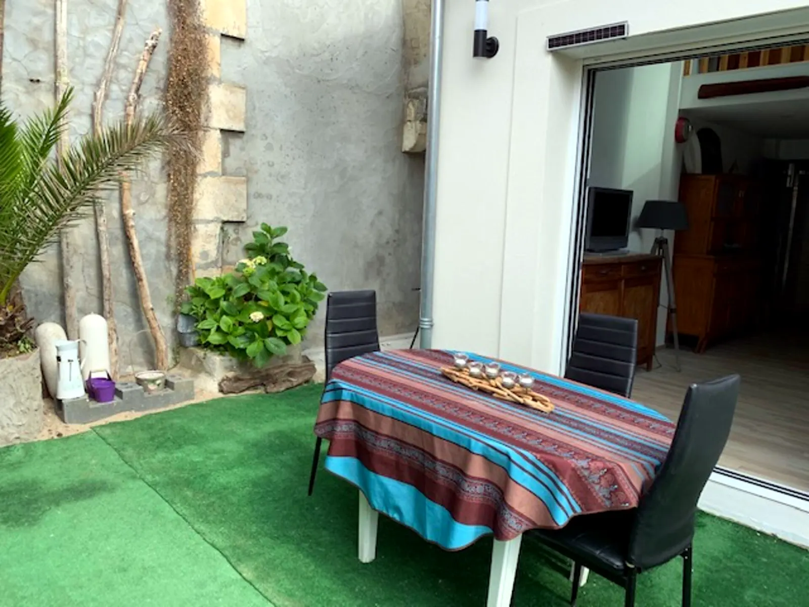
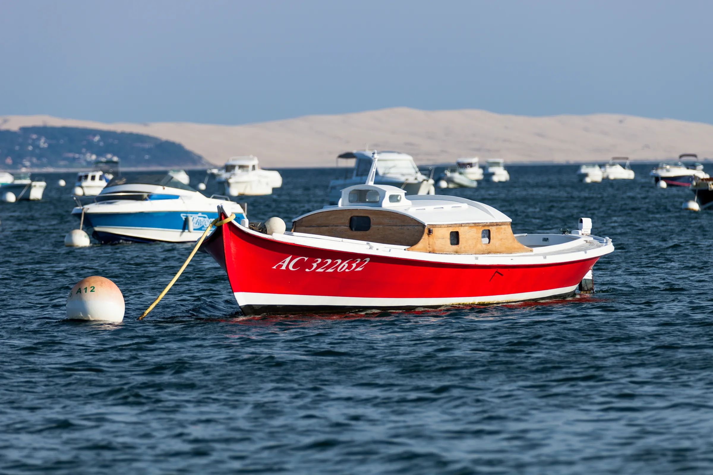
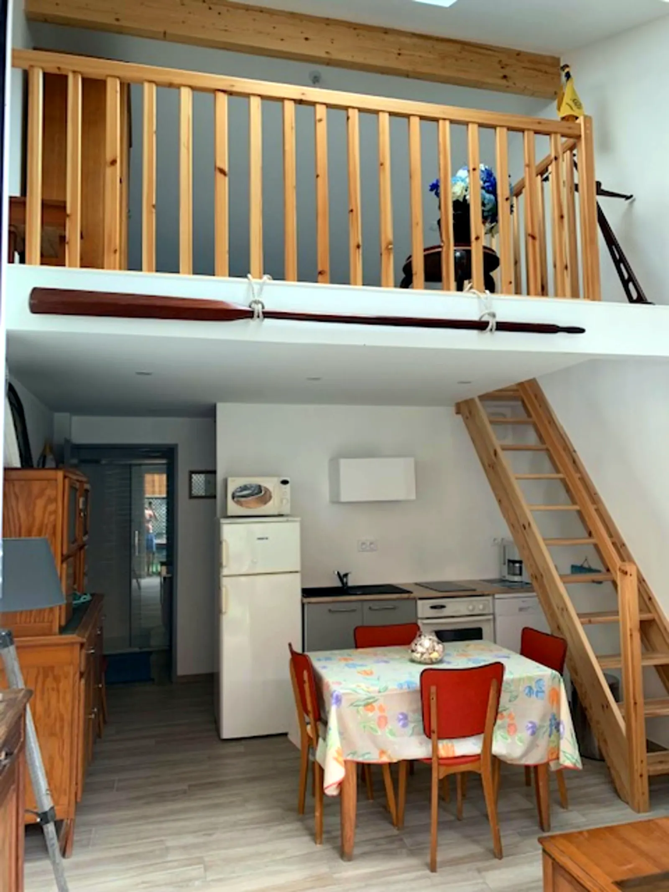
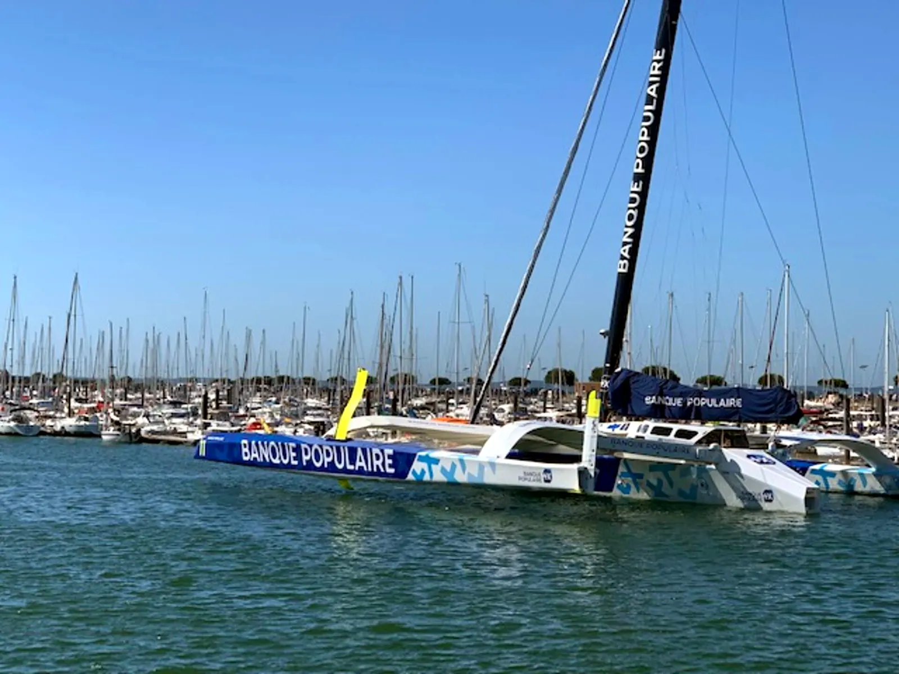

Extérieur
Jardin privé.
Plein sud.
20 m² à l'abri des regards, salon de jardin compris.
T3 neuf · Arcachon
50 m², jardin plein sud, à 100 m du port et de la plage.

Le bassin d'Arcachon.
Un T3 neuf, accolé à la maison des propriétaires, avec sa propre entrée. Les commerces et la plage à 100 mètres. Les pistes cyclables au pied de la porte. Le centre-ville à 1,5 kilomètre. Et un jardin plein sud, à l'abri des regards.

Extérieur
20 m² à l'abri des regards, salon de jardin compris.
Plage et port
100 m
Du bassin, des pontons et des commerces.
Note des voyageurs
4,86
188 avis · Superhôtes depuis 5 ans.

Intérieur
Surface
50 m²
2 chambres · 3 lits · 4 voyageurs.
Connecté
De quoi télétravailler entre deux baignades.

Le quartier
Ils y ont séjourné
4,86
188 voyageurs. 90 % de cinq étoiles.
Françoise et Gérard · Superhôtes · Hôtes depuis 5 ans · Français, anglais, espagnol
Emplacement
Vu du cielLe bassin d'Arcachon.
À 128 mLe port de plaisance.
À 181 mLa plage.
Boulevard ChanzyEt au milieu, votre T3.
La carte 3D n'a pas pu se charger sur cet appareil.
Distances à vol d'oiseau mesurées sur OpenStreetMap. Hauteurs des bâtiments estimées.
Boulevard Chanzy · L'Aiguillon · Arcachon
Quartier du port de plaisance, côté bassin.
4 voyageurs maximum. Pas d'animaux, sauf animaux d'assistance.
Non-fumeur. Vapotage compris. Pas de fêtes ni de soirées.
Sécurité. Détecteur de fumée installé. Caméras de surveillance extérieures sur place.
À noter. Escalier raide vers la mezzanine. Plan d'eau à proximité. Pas de parking privé.